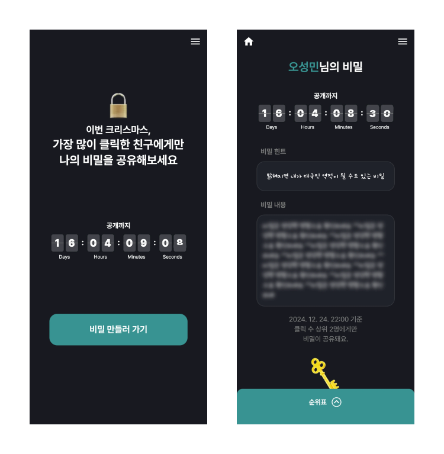

<!DOCTYPE html>
<html lang="ko">
  <head>
    <link rel="stylesheet" href="https://latex.vercel.app/style.css" />
    <link rel="stylesheet" href="https://latex.vercel.app/prism/prism.css" />
    <meta charset="UTF-8" />
    <meta name="viewport" content="width=device-width, initial-scale=1.0" />
    <title>프로젝트 회고 - 내 비밀을 눌러봐</title>
  </head>
  <body>
    <h1>
      프로젝트 회고<br />
      내 비밀을 눌러봐
    </h1>

    <p class="author">
      오성민 <br />
      December 26, 2024<br />
      <a href="../../index.html">홈으로 돌아가기</a>
    </p>

    <article>
      <h2>
        이번 크리스마스, 가장 많이 클릭한 친구에게만 내 비밀을 공유해보세요
      </h2>
      <figure>
        
        <figcaption>내 비밀을 눌러봐 ui</figcaption>
      </figure>
      <p>
        <a href="https://github.com/awesomemin/click-my-secret" target="_blank"
          >깃허브</a
        >
        <a href="https://clickmysecret.com/" target="_blank"
          ><del>서비스 페이지</del></a
        >
      </p>
      <p>프로젝트 기간: 2024. 11. 28. ~ 2024. 12. 8. (11일)</p>
      <p>
        <a href="https://colormytree.me" target="_blank"
          >【내 트리를 꾸며줘】</a
        >
        서비스에서 영감을 받아 비슷한 이벤트성 서비스를 만들고 싶었습니다. 2년
        전 만들었던 클릭 배틀처럼 클릭 경쟁 기반의 크리스마스 이벤트성 서비스를
        기획하다가 【내 비밀을 눌러봐】가 탄생하였습니다.
      </p>
      <h3>주요 기능</h3>
      <ul>
        <li>ID / PW / 닉네임 입력으로 회원가입</li>
        <li>1인당 비밀 1개 생성 가능</li>
        <li>비밀 페이지 내 열쇠 버튼(🔑) 클릭 수에 따른 실시간 순위 확인</li>
        <li>
          2024년 12월 24일 22:00 기준 클릭 수 상위 N명에게만 비밀이 공개됨
        </li>
      </ul>
      <h3>성과</h3>
      <ul>
        <li>회원가입 51건</li>
        <li>비밀 생성 28건</li>
        <li>총 클릭 수 22,006회</li>
      </ul>
      <p>
        개인적으로 이번 프로젝트는 '비즈니스적 실패, 기술적 성공'으로 정의할 수
        있을 것 같습니다. 예상보다 훨씬 적은 유저밖에 모으지 못했지만
        기술적으로는 (2년 전 클릭 배틀에 비교도 할 수 없을 정도로) 견고한
        서비스를 만들었기 때문입니다. 아래에서 무엇을 잘못했고 무엇을 잘했는지,
        무엇을 배웠고 무엇을 더 공부해야 할지 정리해 보겠습니다.
      </p>
      <h2>비즈니스적으로 배운 점</h2>
      <p>
        비즈니스의 성공을 위해서는 '내가 만들고 싶은 것'이 아니라 '사람들이
        원하는 것'을 만들어야 합니다. 그리고 시장에 제품을 내놓기 전까지는
        사람들이 그것을 원할지 절대 알 수가 없기 때문에 핵심 기능만 가진 MVP를
        빠른 주기로 만들어서 시장의 반응을 살피면서 서비스를 꾸준히 개선해
        나가야 합니다. 위와 같은 이유로 2주도 안 되는 짧은 기간 동안 혼자서
        기획, 디자인, 개발, 배포까지 마치고 빠르게 출시를 했습니다.
      </p>
      <p>
        처음 기획을 할 때는 클릭배틀처럼 별도의 마케팅 없이도 자연스럽게
        바이럴이 되면서 유저가 꾸준히 유입될 수 있는 서비스를 상상했습니다.
        하지만 몇 가지 설계 실수로 인해 제가 생각한 자동 바이럴 엔진의 시동이 잘
        걸리지 않았습니다.
      </p>
      <h3>유저에게 뭔가를 요구하기 전에 먼저 가치를 제공해야 한다.</h3>
      <p>
        【내 비밀을 눌러봐】에서는 비밀을 만들기 전에, 친구의 비밀을 클릭하기
        전에 유저에게 '먼저 로그인을 요구'하고 있습니다. 저는 이 점이 전환율을
        낮춰 바이럴 엔진의 작동을 막은 주요 요소인 것으로 추측하고 있습니다.
        사용자 입장에서는 아직 서비스를 이해하지 못한 상황에서 무작정 로그인을
        요구하니, 서비스를 이탈하게 되는 것입니다. 특히 이벤트성 서비스의 특성상
        유저의 진입 장벽이 훨씬 더 낮았어야 합니다.
      </p>
      <p>
        예를 들어, 비밀 입력을 먼저 유도하고 비밀 완성 후에 공유를 위해 회원
        정보를 입력하는 방법이 있을 것입니다. 이런 방법을 사용하면 유저에게 비밀
        입력에 소요된 시간과 노력이라는 매몰 비용을 발생시켜 쉽게 서비스를
        이탈하지 못하게 하고 전환율을 높일 수 있을 것입니다. 비밀 생성뿐만
        아니라, 비밀 클릭에 있어서도 비로그인 상태에서 일단 버튼 클릭을 허용하고
        클릭 점수를 저장하고 싶다면 로그인을 할 수 있도록 구현하면 좋았을
        것입니다.
      </p>
      <p>
        또한, 자연스러운 가입 절차를 제공하기 위해서는 회원가입 페이지로 유저를
        이동시키지 않고 비밀 생성 페이지에서 회원가입을 위한 정보를 추가로
        입력하도록 하는 방법도 효과가 있을 것으로 생각합니다.
      </p>
      <h3>사용자를 당황시키거나 고민하게 만들지 마라.</h3>
      <p>
        출시 이후 주요 반응은 "재미있는 컨셉이다"라는 긍정적 평가도 있었지만
        동시에 서비스의 핵심 기능에 대한 의문도 있었습니다. 사용자 입장에서는
        덜컥 비밀을 만들라는 요청을 받았을 때, 무엇을 입력해야 할지 고민이
        된다는 것입니다. 서비스 특성 상 누가 나의 비밀을 보게 될지도 모르는데
        무작정 민감한 정보를 입력하기 어렵다는 의견이 있었습니다. 또, 사람들이
        과연 자신의 비밀을 궁금해할지에 대한 고민을 하는 사용자도 있었습니다.
      </p>
      <p>
        이러한 반응이 나온 데에는 잘못된 단어 선택도 기여했다고 생각합니다. 처음
        기획 의도는 본인의 민감한 비밀이 아니라 그저 재미있는 이야기를 주고받을
        수 있는 가벼운 서비스가 되는 것이었습니다. 그러나, 비밀이라는 단어가
        주는 느낌이 사용자로 하여금 무겁고 민감한 이야기를 해야 할 것 같다는
        생각을 심어주었던 것 같습니다.
      </p>
      <p>
        이 문제를 개선하기 위해서 비밀 생성 과정에서 사용자에게 더 친절한
        가이드를 제공했다면 좋았을 것 같습니다. "무엇을 입력할지
        고민되시나요?"같은 툴팁을 배치해서, 이러한 내용을 입력해보라는 추천이나
        예시를 보여줬다면 사용자의 서비스 이해도를 높이고 개발자의 기획 의도를
        더 잘 전달할 수 있었을 것입니다.
      </p>
      <h2>기술적으로 배운 점</h2>
      <h3>사용한 기술</h3>
      <ul>
        <li>figma : 기획 및 UI 디자인</li>
        <li>next.js : 풀스택 개발 (SSR 및 비즈니스 로직, API 엔드포인트)</li>
        <li>tailwind : 스타일링</li>
        <li>prisma : ORM</li>
        <li>PostgreSQL : 메인 DB</li>
        <li>Redis : 클릭 수 저장을 위한 캐시 DB</li>
        <li>docker : 배포 환경 구축</li>
      </ul>
      <h3>2년 전 프로젝트의 문제점을 Redis로 해결하다.</h3>
      <p>
        2년 전 프로젝트인 클릭 배틀에서 기술적으로 가장 큰 문제였던 부분이 바로
        과도한 클릭에 따른 서버 하드웨어 자원의 과부하였습니다. 당시에는 컴퓨터
        구조나 서버의 작동 방식에 대한 지식이 거의 없었기 때문에, 클릭 1회 당
        하드디스크에 쓰기를 1회 실행하는 클라이언트 요청이 서버에 어느 정도의
        부담을 줄지 예상하지 못했습니다. 또한, 해당 문제의 근본 원인을 파악하지
        못한 채 임시방편으로 초당 요청 횟수를 제한하는 방법으로 대처했고 그에
        따른 부작용이 발생하기도 했습니다. (<a
          href="../clickbattle//프로젝트-회고-ClickBattle.html"
          target="_blank"
          >해당 프로젝트 회고 글의 TroubleShooting 문단 참고</a
        >) 그러나 군대에서 컴퓨터 과학에 대해 공부하면서 하드디스크 입출력은
        메모리 입출력에 비해 훨씬 큰 비용이 필요하다는 것을 알았습니다. 따라서
        이번 프로젝트에서는 in-memory DB인 Redis를 도입하여 광클 트래픽에
        대응하였습니다.
      </p>
      <p>
        Redis를 도입하는 과정에서도 고민은 있었습니다. 클릭 데이터 전체를
        Redis에 저장해서 cache DB로 사용할지, Redis를 일종의 큐로 사용해서 신규
        클릭 데이터만 저장하고 주기적으로 DB에 적용하며 Redis의 정보를 삭제할지
        선택해야 했습니다. cache DB로 사용할 때에는 PostgreSQL과 Redis 간의
        동기화에 주의해야 한다는 점이 있었지만 큐로 사용하는 방안에 비해 구현이
        쉬울 것이라 판단해 Redis를 클릭 데이터의 cache DB로 쓰고 대신 일정
        시간마다 PostgreSQL에 백업하는 방식을 선택했습니다. (사실 kafka라는
        기술을 사용하면 대량의 클릭을 메시지 큐를 이용해 안정적으로 처리할 수
        있다는 것 같았으나 그것을 또 학습하고 적용하기에는 너무 오버엔지니어링인
        것 같아 포기했습니다.)
      </p>
      <p>
        그렇게 Redis를 도입하여 클릭 데이터를 읽고 기록하는 로직을 구현했으나...
        Redis 데이터를 PostgreSQL로 백업하는 로직 구현 과정 중에 문제가
        발생했습니다.
      </p>
      <h3>next.js가 서버리스라고??</h3>
      <p>
        기본적으로 클릭 데이터에 대한 쓰기와 읽기 요청은 Redis로 처리하고,
        데이터의 장기 저장을 위해 10분마다 PostgreSQL에 백업하는 로직을
        작성하려고 했습니다. 이렇게 하면 만약 Redis 세션이 종료되거나 서버가
        재부팅되더라도 PostgreSQL에 저장되어 있는 클릭 데이터를 Redis로
        불러오기만 하면 데이터 손실 없이 서비스를 지속적으로 운영할 수 있기
        때문입니다.
      </p>
      <p>
        그런데, 해당 로직을 작성하려고 살펴보니 코드를 어디에 작성해야 할 지 알
        수가 없었습니다. 예를 들어 자바스크립트 백엔드 라이브러리인
        express.js에서는 app.js라는 몸통이 되는 파일에 express 서버 인스턴스를
        생성하고, 거기에 미들웨어나 라우터를 붙여서 서버를 만듭니다. 그러나
        next.js에는 express.js의 app.js와 같은 서버의 중심이 되는 파일이
        없었습니다. 그래서 setInterval을 사용해서 DB 백업을 실행하는 로직을
        어디에 어떻게 작성해야 할지 혼란스러웠습니다. next.js의 미들웨어나
        라우트 핸들러는 클라이언트의 요청이 있을 때만 실행되기 때문에 서버가
        지속적으로 동작하는 작업을 처리하기에는 구조적으로 적합하지 않았습니다.
      </p>
      <p>
        이쯤 되니 next.js가 무엇인지 정확히 모르고 사용하고 있었다는 생각이
        들었습니다. 어렴풋하게 'SSR을 지원하는 풀스택 리액트 프레임워크' 정도로
        알고 있었던 것 같습니다. 구글에 검색하거나 GPT에게 물어봐도 next.js가
        무엇인지 명쾌하게 이해시켜주는 내용은 없었습니다. 그저 SSR, 리액트,
        풀스택 프레임워크 같은 단어들이 계속해서 등장하면서 어느 정도 느낌만
        잡히는 기분이었습니다. 결국 제 나름대로 정보를 찾아보고 공부를 하면서
        next.js에 대해 다음과 같이 정의를 하였습니다. "next.js는 서버 사이드
        렌더링을 하기 위한 백엔드 기능을 지원하는 서버리스 환경에 최적화된
        리액트 프레임워크이다." 즉, next.js에서 제공하는 라우트 핸들러는 요청이
        발생할 때만 실행되기 때문에 서버리스에 최적화되어 있어서 setInterval
        등을 사용해서 주기적으로 특정 행위를 반복 실행하도록 하는 것은
        부적절하다는 것을 알게 되었습니다. 따라서 아래와 같이 미들웨어에 10분이
        경과했는지 확인하는 로직을 넣고 Redis 동기화 전용 API 엔드포인트를
        만들어서 구현하였습니다.
      </p>
      <pre><code class="language-js">// middleware.ts
let lastRedisSync = new Date(); // 마지막으로 Redis를 동기화 한 시간

export async function middleware(request: NextRequest) {
  // 마지막 동기화 시간이 10분 경과됐으면 동기화 API를 호출
  if (Date.now() - lastRedisSync.getTime() >= 10 * 60 * 1000) {
    fetch(`${serverAddress}/api/redisSync`);
    lastRedisSync = new Date();
  }
  // 중략...
}</code></pre>
      <p>
        해당 경험을 통해 next.js의 백엔드 기능은 근본적으로 SSR을 지원하기 위한
        용도이고, 비즈니스 로직이 간단한 어플리케이션에 경우에 한정하여
        next.js의 API 라우터에 비즈니스 로직을 추가하여 풀스택 프레임워크로
        사용할 수 있다는 나름의 결론을 내렸습니다. 그래서 다음 프로젝트에는
        next.js를 SSR을 위한 용도로만 사용하고 백엔드 비즈니스 로직은 별도의
        nest.js 서버로 분리할 예정입니다.
      </p>
      <h2>앞으로의 과제와 총평</h2>
      <h3>모니터링 가능한 환경 구축을 위한 학습.</h3>
      <p>
        프로젝트를 할 때마다 Google Analytics를 사이트에 붙이긴 하지만 사용법을
        잘 몰라 겨우 활성 사용자 수를 확인하는 정도에 불과하고, 제대로 된
        로깅이나 모니터링 도구도 없어 서비스에 문제가 발생해도 실시간으로
        확인하고 대처할 수가 없었습니다. 위의 '비즈니스적으로 배운 점'
        파트에서도 회원가입 과정에서 유저가 많이 이탈했다는 식의 이야기를
        적었는데 사실 뇌피셜일 뿐이고 정확한 이탈율, 전환율 등의 지표를 확인할
        수는 없었습니다. 일을 과학적으로 잘 하기 위해서는 숫자로 이야기해야
        합니다. 지금까지는 초보 개발자로서 당장의 기능을 구현하는 것에
        집중하느라 배포 이후의 운영에 대한 대비가 잘 되어있지 않았습니다. 다음
        프로젝트부터는 모니터링 및 분석 툴에 대한 학습을 통해 사용자의 행동에
        대한 정확한 데이터를 가지고 서비스를 발전시켜 나갈 수 있도록 하겠습니다.
      </p>
      <p>
        생각보다 많은 유저를 모으거나 큰 광고 수익을 얻지는 못했지만 재미있는
        프로젝트였습니다. 디자인적, 기술적으로도 지금껏 진행한 모든 프로젝트 중
        가장 완성도가 높았다고 생각합니다. 다음 프로젝트는 한동안 개인적인 공부
        후에 진행해서 비즈니스적, 디자인적, 기술적으로 모두 이번 프로젝트보다
        월등히 뛰어난 결과물을 내놓겠습니다.
      </p>
    </article>
    <script src="https://cdn.jsdelivr.net/npm/prismjs/prism.min.js"></script>
    <script src="https://cdnjs.cloudflare.com/ajax/libs/prism/1.29.0/plugins/autoloader/prism-autoloader.min.js"></script>
  </body>
</html>
